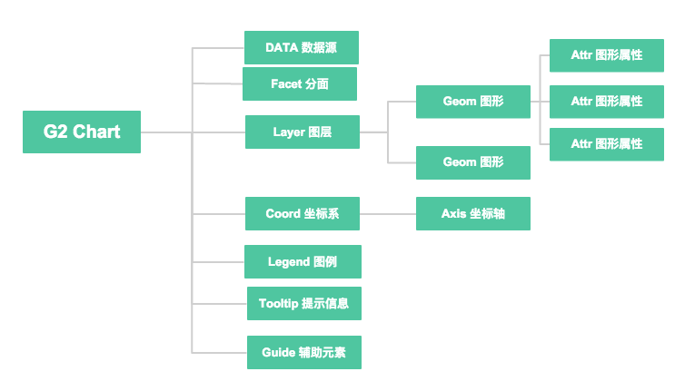

教程
G2 图表构成
G2 所构建出的图表是由一系列独立的图形语法元素组合而成的，它将一个数据源通过不同的维度展示出来，同时还包括一系列的辅助元素，比如坐标轴、图例等，详细的构成元素说明如下：
- 数据源（source），这是最基础的部分，即你想要可视化的数据；
- 多个图层，G2 采用了图层的设计，每个图层有一个或者多个几何图形对象（Geom)构成，详见几何图形对象（Geom)；
- 一个几何图形对象（geom）有多个图形属性（attr），属性中可以使用统计函数（stat)，也可以直接使用数据的具体字段，每个字段都有各自的度量（scale）；
- 每个图表存在于一个坐标系（coord）中，每一个坐标系（coord）对应多个坐标轴（axis），x轴或者y轴；
- 图表的坐标轴（axis）、图例（legend）、提示信息（tooltip） 都是图表的辅助元素，用于帮助用户更好地理解图表；
- 图表也可以直接使用自定义辅助元素，来绘制辅助线、辅助文本、辅助图片、辅助框等；
- 分面（facet）（可选），一个图表可以设置有多个分面（facet），将图表拆分成多个可联动的子图。
